Kang's Home Page
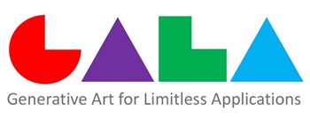
In collaboration with Professors Kaiping Peng and X.J. Sam Zheng of Tsinghua University Department of Psychology, Professor Zhang developed PsychArt, a personalized image generation Web system based on the Big Five Personality Traits. PsychArt provides a user-friendly interface that allows the user to select the scales of ten self-descriptive items and automatically generate a Kandinsky styled image representing the users personal profile. It was first experimented at Alibaba's Hupan University in China in 2015 with great success.
The abstract images and design generated by GALA have the following advantages, that maximize the flexibility of personalization and customization:
Using the Kandinsky styled visual elements, Professor Zhang has also developed a parameterized generator for Kandinsky Fonts, including 26 capital case and 26 lower case letters.
Example products using the generated images include silk scarves (used as official gifts at HKUST-GZ), ties, mugs, and mousepads, as shown below. One application of the generative techniques is to generate abstract images of desired styles for hotel and restaurant decoration and interior design. A typical design is to assign a single style of distinct paintings to each functional area or floor, including corridors and rooms (as modeled in the following figures). The cost of generating and producing these paintings is minimal comparing with manual processing or painting.
Click HERE for art / design related publications.
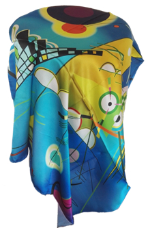 | 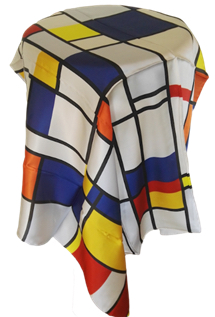 | 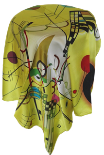 | 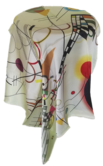 | 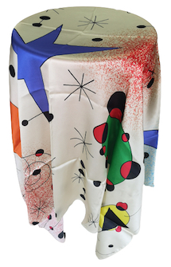 | 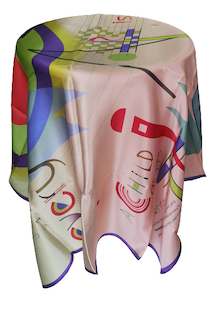 |
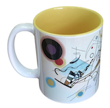 | 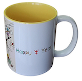 | 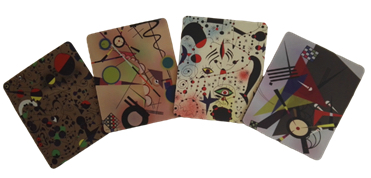 | 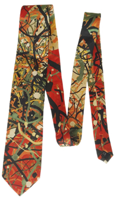 | 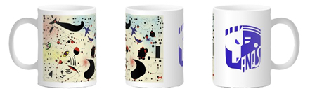 |
A university classroom decorated with Pollock styled image (real):
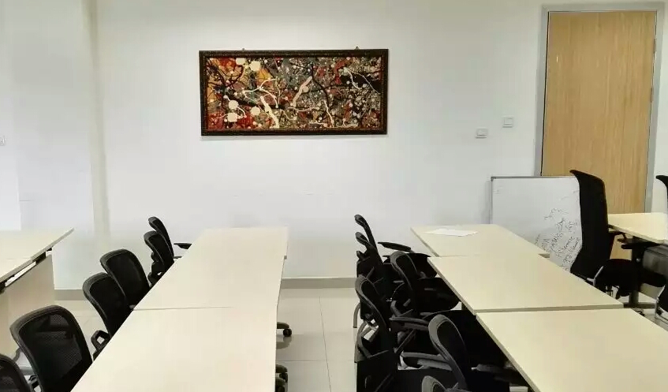
Hotel interior design (abstract art images pasted):
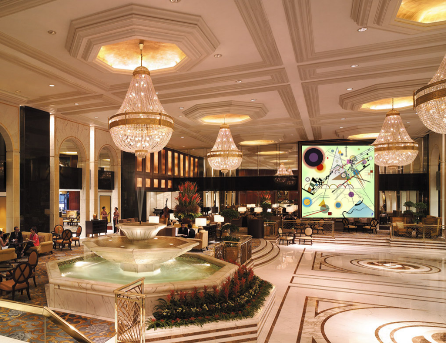
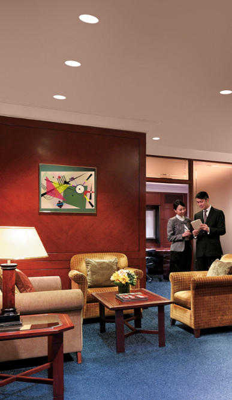
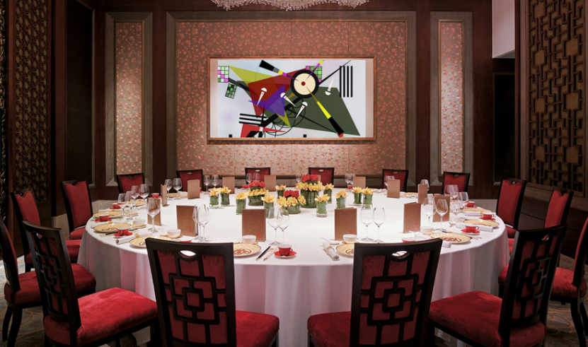
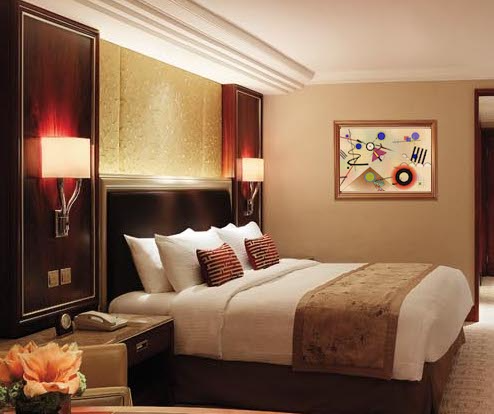
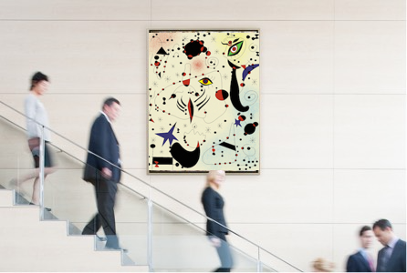
Selected screenshots of "Mind Painting" (first used at Alibaba Hupan University in September 2015):
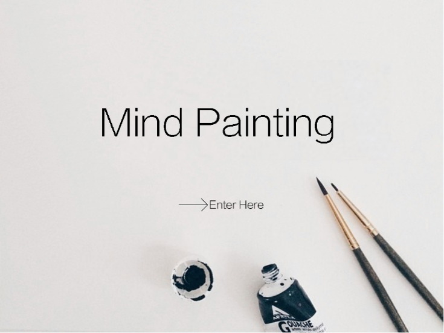
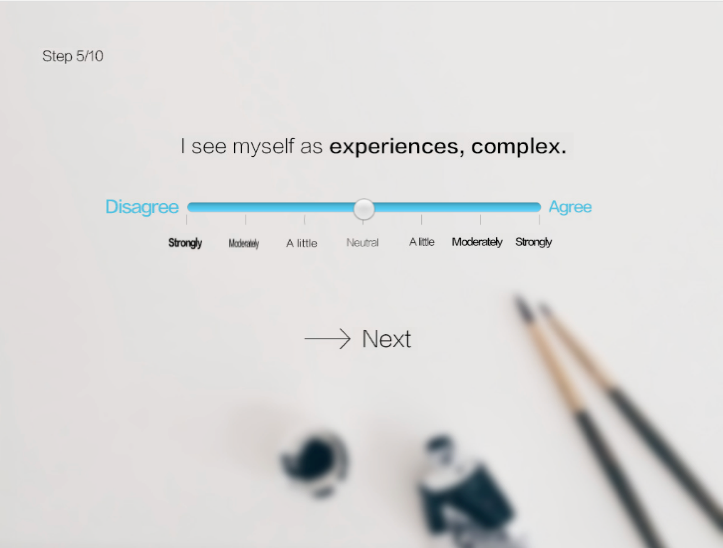
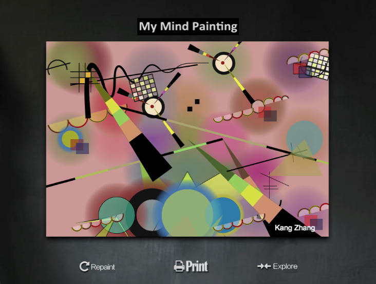
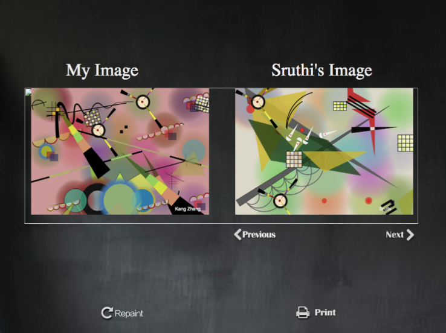